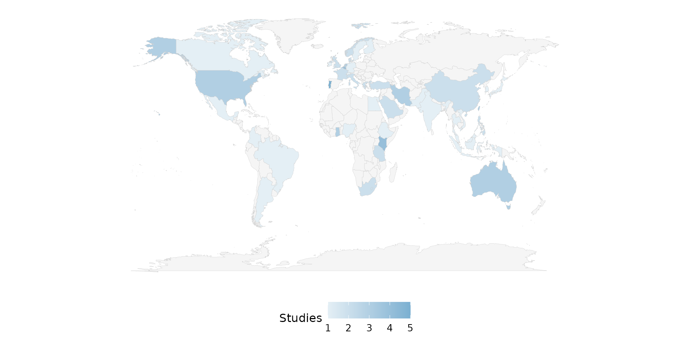
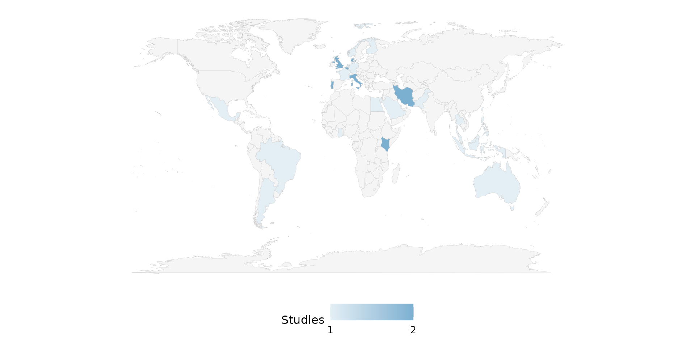
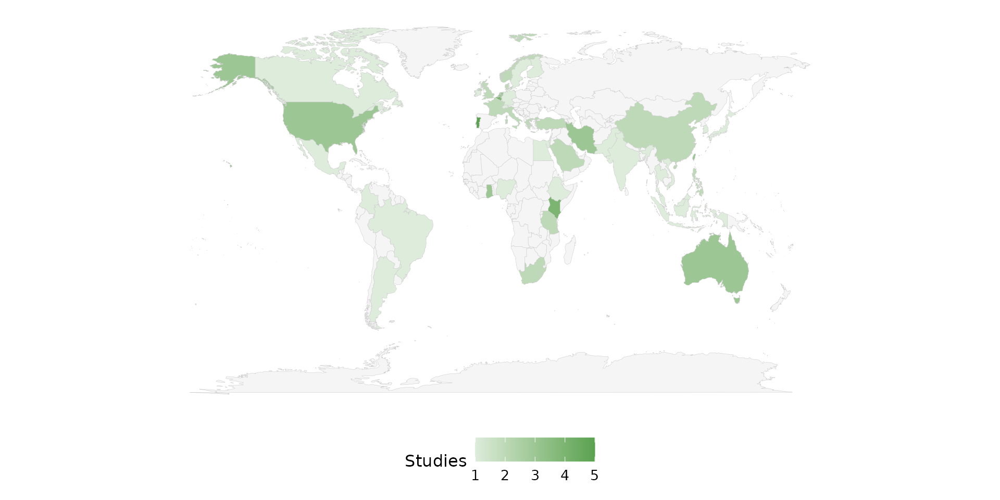
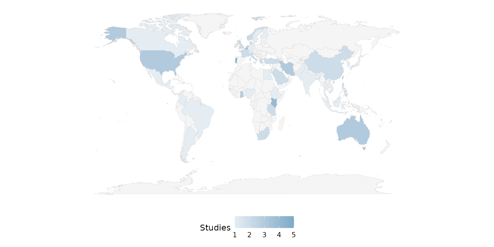
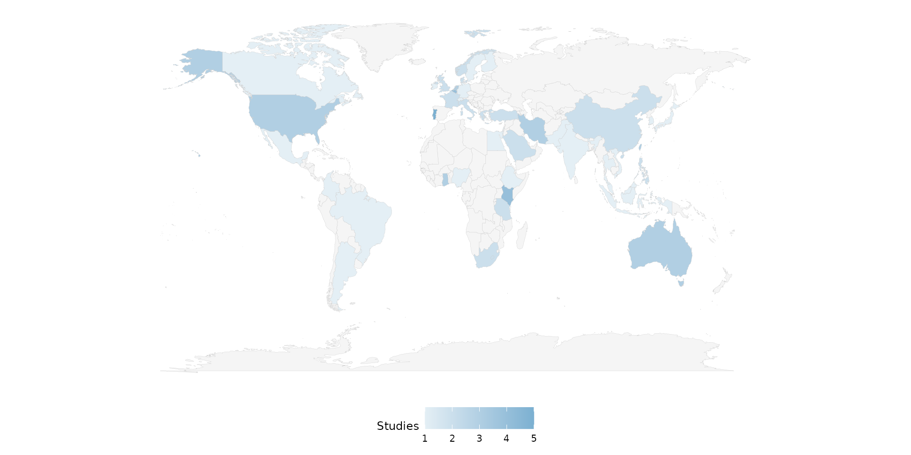
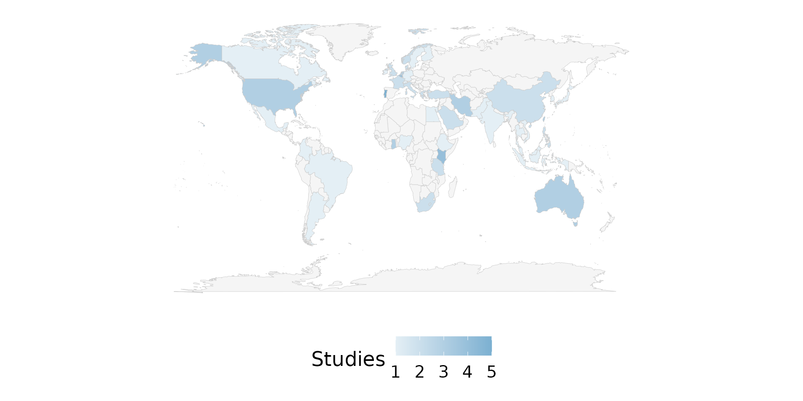
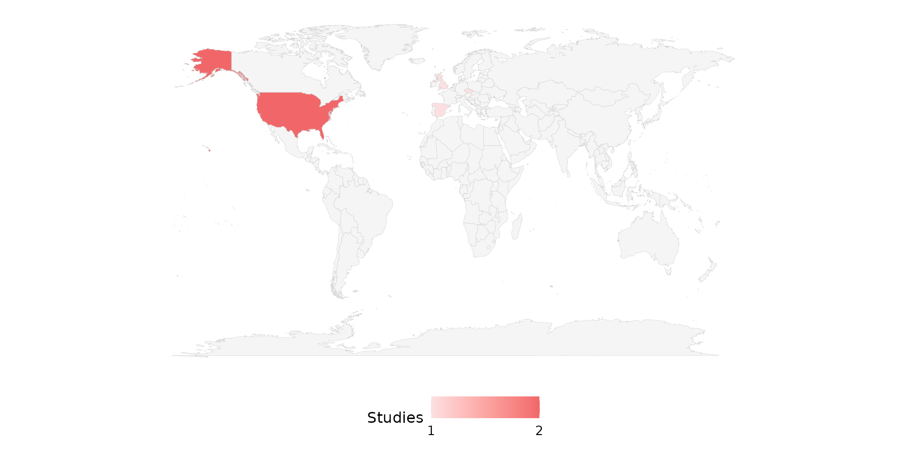
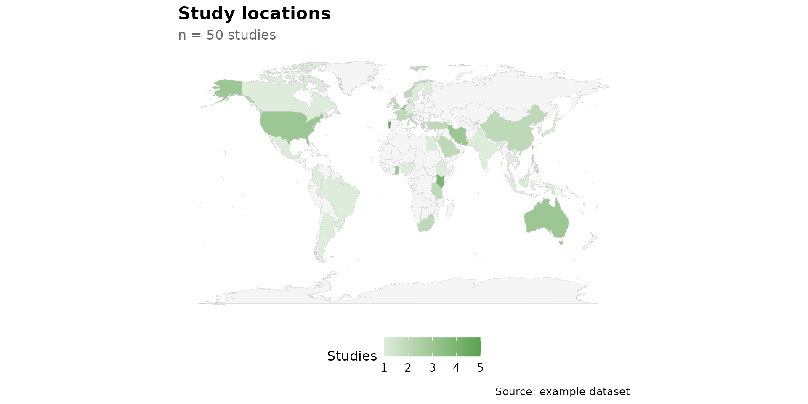

reviewMap() draws a world choropleth, shading each
country by the number of studies conducted there. It is the geographic
counterpart to reviewBar(). This article walks through
every argument of
reviewMap(data, country_col = Country, sep = "\r\n", fill = "#7BB0D1",
base_size = 12, na.rm = TRUE)The function relies on the maps package to supply country polygons; all map examples below are skipped when it is not installed.
Default
Pass the data frame — country_col defaults to
Country. Countries are counted and the world is shaded from
a light tint (few studies) to fill (many studies).
Unvisited countries stay a neutral grey.
reviewMap(studies)
country_col: the country column
The default is Country, a multi-value column in
studies where each cell lists every country a study covers,
separated by newlines. Column names may be bare or quoted; passing it
explicitly is equivalent to the default:
reviewMap(studies, country_col = Country)
sep: multi-value separator
A single cell may name several countries. In studies,
Country uses newline separators ("\r\n", the
default), so a multi-country study contributes one count to each of its
countries:
reviewMap(studies, sep = "\r\n")
If your data uses a different delimiter, set sep. Here
we rebuild a semicolon-separated column to demonstrate:
studies_semi <- studies
studies_semi$Country <- gsub("\r\n", "; ", studies_semi$Country)
reviewMap(studies_semi, sep = "; ")
fill: high end of the color gradient
fill sets the high color of the
gradient (the low end is a fixed light tint of the same hue). A single
hex color works:
reviewMap(studies, fill = "#59a14f")
Use one of the package PALETTE colors:
reviewMap(studies, fill = PALETTE[7])
A different palette entry shifts the whole ramp:
reviewMap(studies, fill = PALETTE[6])
base_size: overall text and element scaling
A single knob scales all text and spacing proportionally. Smaller, for multi-panel figures:
reviewMap(studies, base_size = 9)
Larger, for slides or posters:
reviewMap(studies, base_size = 18)
na.rm: handling missing countries
reviewMap() supports only na.rm (there is
no na_label, na_in_percent, or
na_last). By default na.rm = TRUE drops rows
with a missing or empty country before counting. The
studies dataset has no missing countries, so we build a
small frame that does:
studies_na <- data.frame(
StudyID = c("S1", "S2", "S3", "S4"),
Country = c("Spain", "Germany", NA, ""),
stringsAsFactors = FALSE
)With the default, the two studies without a country simply do not contribute:
reviewMap(studies_na)
With na.rm = FALSE, the missing rows are retained and
grouped under an "Unknown" region. "Unknown"
matches no country polygon, so it never appears on the map, but it
is counted — this keeps the totals consistent with the raw data
even though it changes nothing visible here:
reviewMap(studies_na, na.rm = FALSE)
Automatic country-alias resolution
Country names in your data need not match the exact spelling used by
maps::map_data("world"). Common aliases are resolved
automatically — for example "United States" ->
USA, "United Kingdom" -> UK,
and "Czechia" -> Czech Republic. All three
shade correctly below:
studies_alias <- data.frame(
StudyID = c("S1", "S2", "S3", "S4", "S5"),
Country = c("United States", "United States",
"United Kingdom", "Czechia", "Spain"),
stringsAsFactors = FALSE
)
reviewMap(studies_alias, fill = PALETTE[3])
Composing with ggplot2
Every review*() function returns a plain ggplot, so you
can keep adding layers, scales, and labels with +:
reviewMap(studies, fill = "#59a14f") +
labs(title = "Study locations", subtitle = "n = 50 studies",
caption = "Source: example dataset") +
theme(plot.title.position = "plot")